TidyDensity offers powerful advanced features including mixture models, empirical distributions, random walks, and multi-distribution comparisons.
Mixture Models
What are Mixture Models?
Mixture models combine multiple probability distributions to model complex data patterns:
- Multimodal distributions (multiple peaks)
- Heterogeneous populations
- Complex real-world phenomena
Creating Mixture Models
Basic Mixture Creation
dist1 <- tidy_normal(.n = 100, .mean = -2, .sd = 0.5)
dist2 <- tidy_normal(.n = 100, .mean = 2, .sd = 0.5)
# Create mixture
mixture <- tidy_mixture_density(
dist1,
dist2,
.combination_type = "stack"
)
# Visualize
mixture$plots
#> $line_plot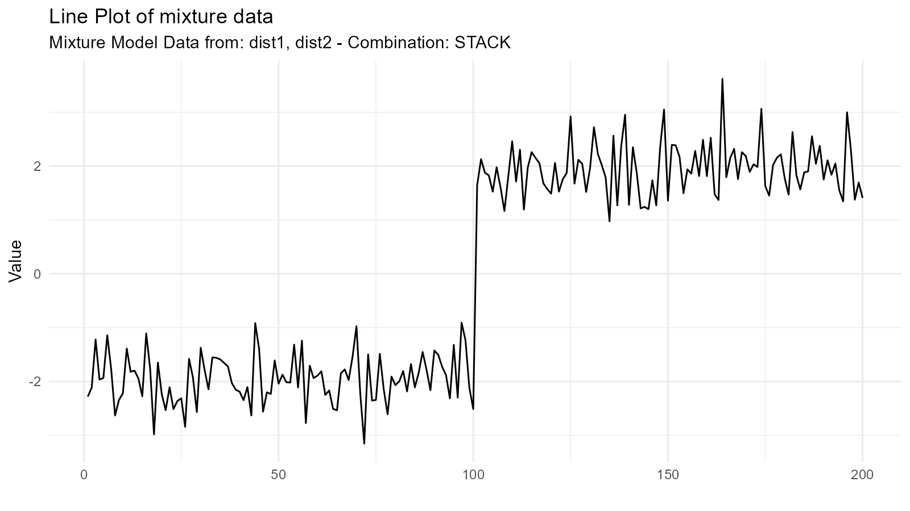
#>
#> $dens_plot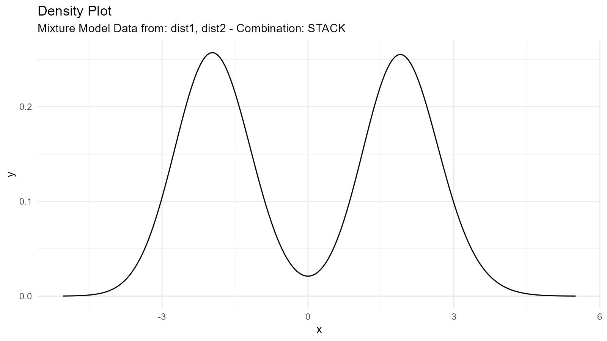
Mixture Types
1. Addition Mixture ("add")
Combines distributions by adding their sample values (element-wise) and then computing the resulting density:
mixture_add <- tidy_mixture_density(
dist1, dist2,
.combination_type = "add"
)
mixture_add$plots
#> $line_plot
#>
#> $dens_plot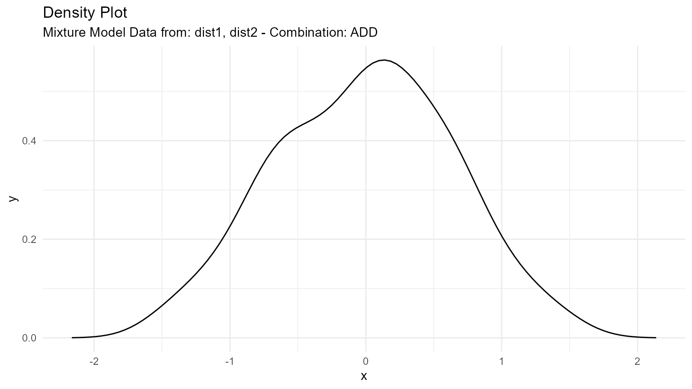
Use Case: Modeling populations with two distinct groups
2. Multiplication Mixture ("multiply")
Multiplies distributions:
mixture_mult <- tidy_mixture_density(
dist1, dist2,
.combination_type = "multiply"
)
mixture_mult$plots
#> $line_plot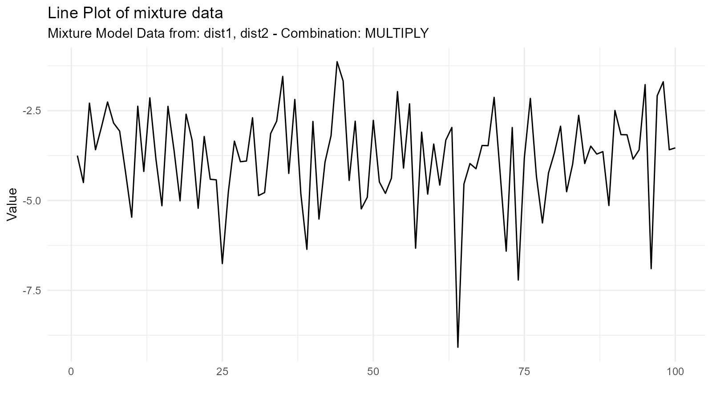
#>
#> $dens_plot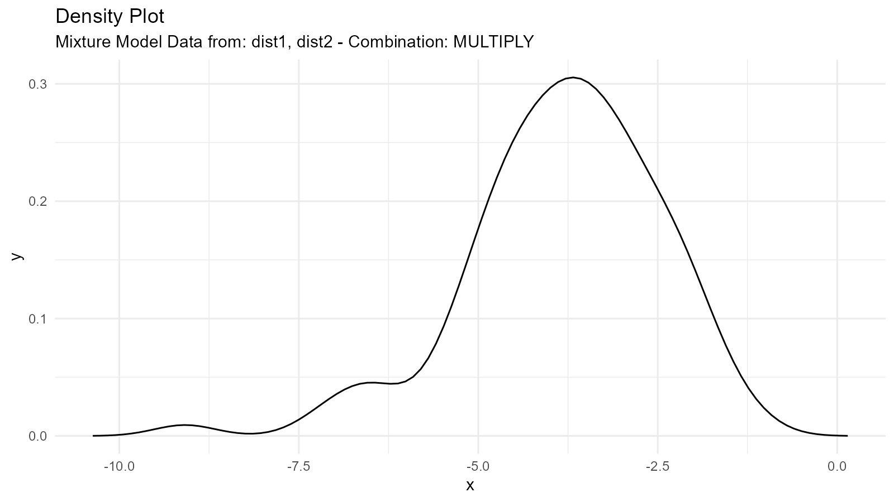
Use Case: Modeling joint effects or constraints
3. Subtraction Mixture ("subtract")
Subtracts second from first:
mixture_sub <- tidy_mixture_density(
dist1, dist2,
.combination_type = "subtract"
)
mixture_sub$plots
#> $line_plot
#>
#> $dens_plot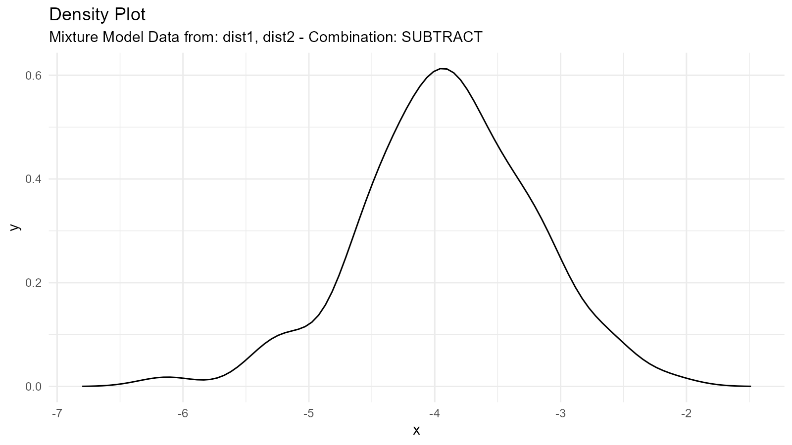
Use Case: Modeling differences between groups
4. Division Mixture ("divide")
Divides first by second:
mixture_div <- tidy_mixture_density(
dist1, dist2,
.combination_type = "divide"
)
mixture_div$plots
#> $line_plot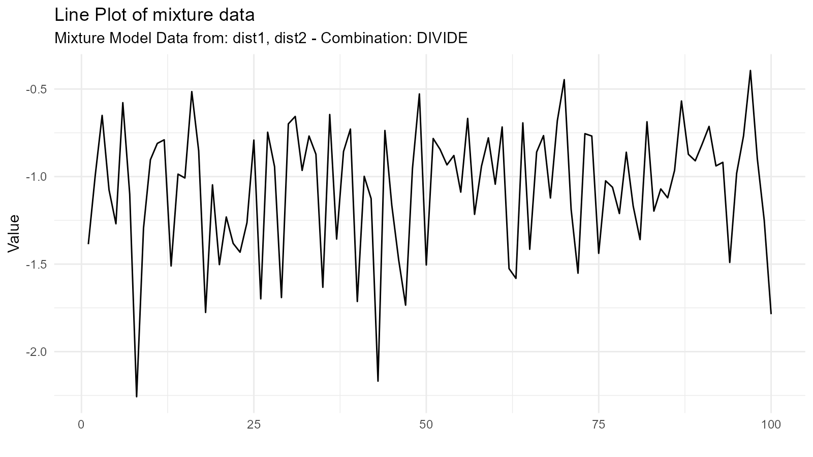
#>
#> $dens_plot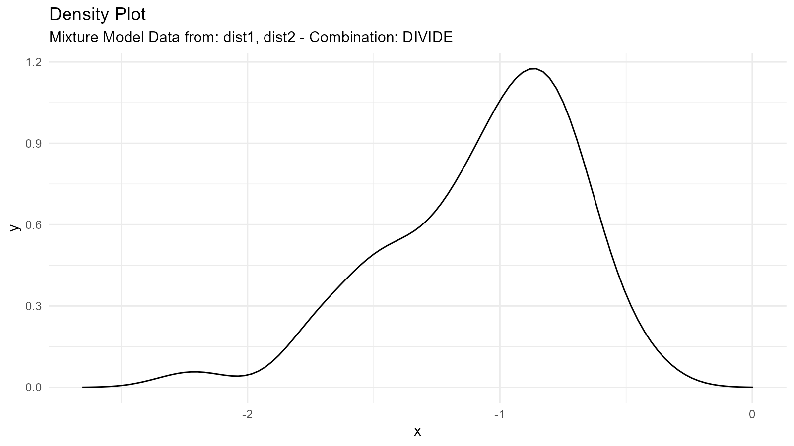
Use Case: Ratios of distributions
Complex Mixture Example
# Three-component mixture
dist_a <- tidy_normal(.n = 100, .mean = -3, .sd = 0.5)
dist_b <- tidy_normal(.n = 100, .mean = 0, .sd = 1)
dist_c <- tidy_normal(.n = 100, .mean = 3, .sd = 0.5)
# Create mixture
complex_mixture <- tidy_mixture_density(
dist_a, dist_b, dist_c,
.combination_type = "stack"
)
# Visualize
complex_mixture$plots
#> $line_plot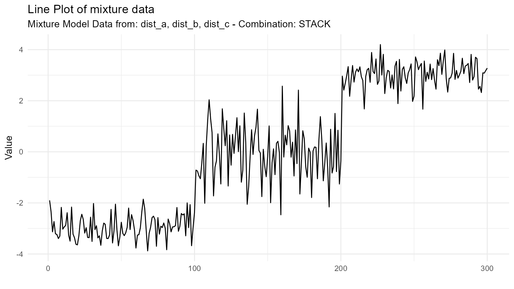
#>
#> $dens_plot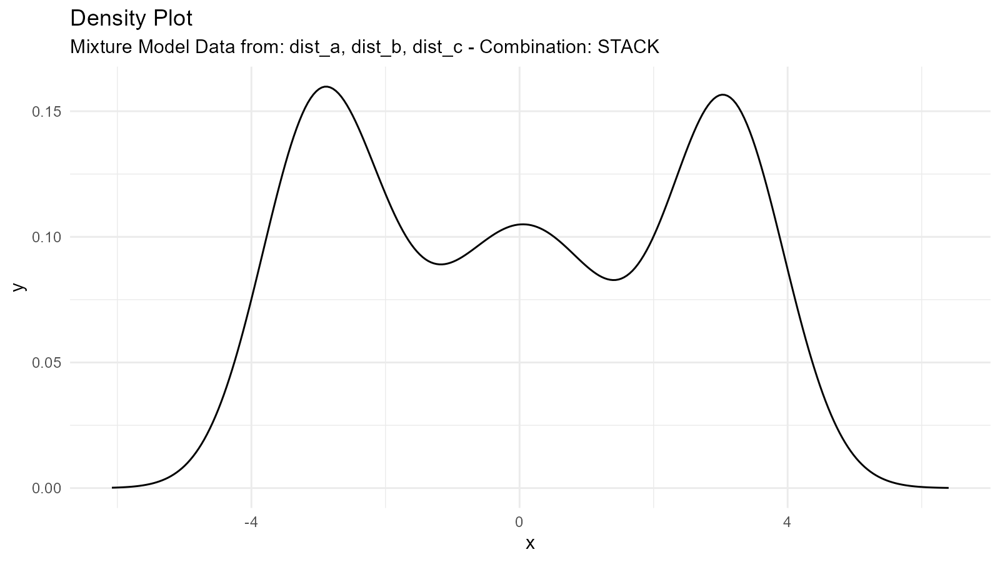
Weighted Mixtures
Create weighted combinations by adjusting the .n
parameter:
# Generate components
dist_heavy <- tidy_normal(.n = 300, .mean = -2, .sd = 0.5) # 75% weight
dist_light <- tidy_normal(.n = 100, .mean = 2, .sd = 0.5) # 25% weight
# Scale densities by intended weights
dist_heavy_weighted <- dplyr::mutate(dist_heavy, y = 0.75 * y)
dist_light_weighted <- dplyr::mutate(dist_light, y = 0.25 * y)
# Create weighted mixture
weighted_mixture <- tidy_mixture_density(
dist_heavy_weighted, dist_light_weighted,
.combination_type = "stack"
)
weighted_mixture$plots
#> $line_plot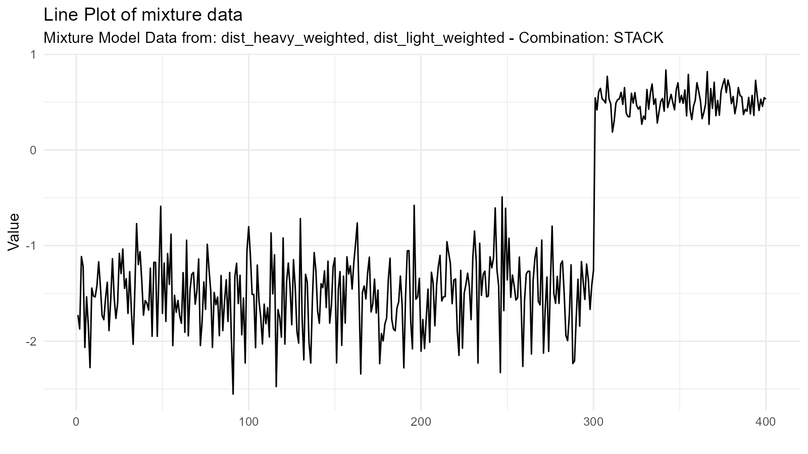
#>
#> $dens_plot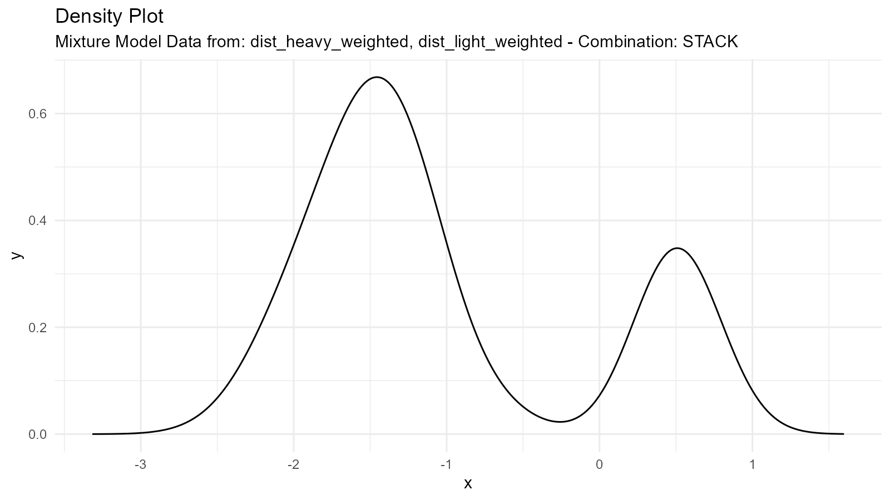
Different Distribution Types
Mix different distribution families:
# Mix normal and gamma
normal <- tidy_normal(.n = 100, .mean = 5, .sd = 1)
gamma <- tidy_gamma(.n = 100, .shape = 2, .scale = 2)
# Create mixture
mixed_family <- tidy_mixture_density(
normal, gamma,
.combination_type = "stack"
)
mixed_family$plots
#> $line_plot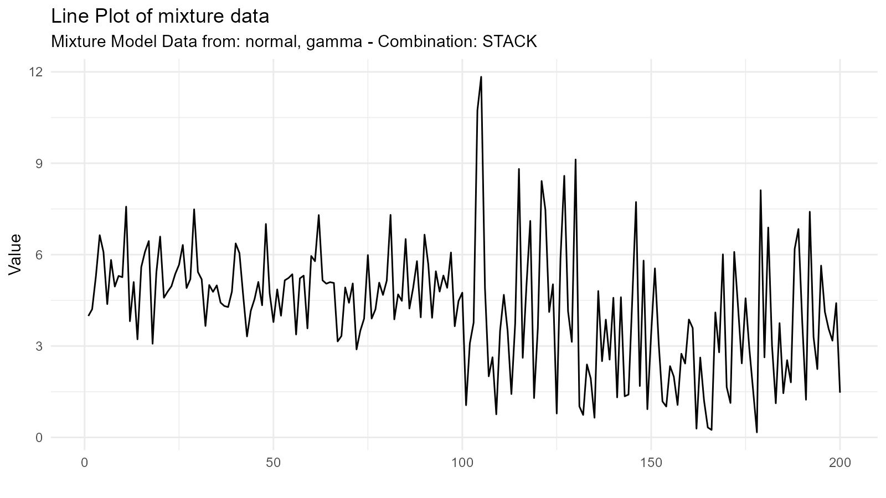
#>
#> $dens_plot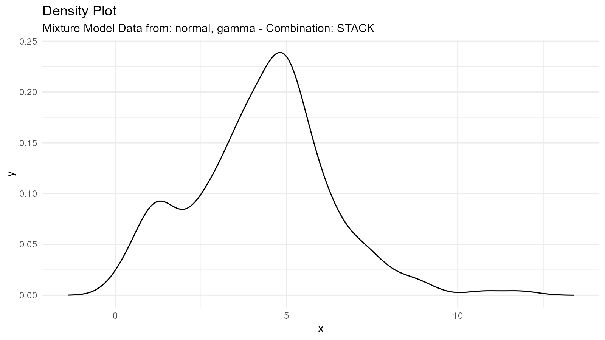
Empirical Distributions
What are Empirical Distributions?
Work directly with your observed data without assuming a distribution:
# Your observed data
observed_data <- mtcars$mpg
# Create empirical distribution
empirical <- tidy_empirical(
.x = observed_data,
.num_sims = 1
)
# Visualize
tidy_autoplot(empirical, .plot_type = "density")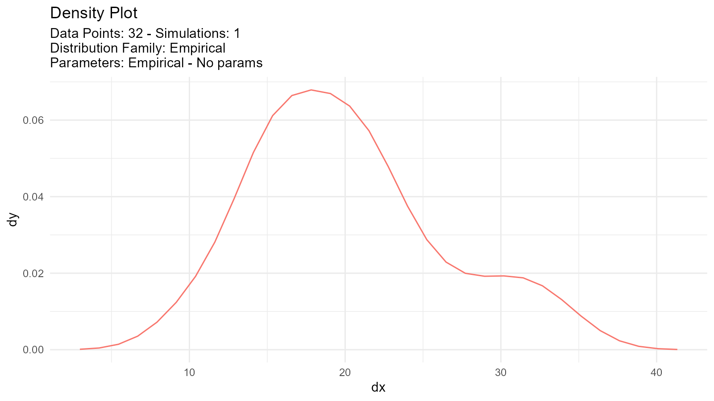
Multiple Empirical Simulations
Generate multiple resamples:
# Multiple bootstrap-like samples
empirical_multi <- tidy_empirical(
.x = observed_data,
.num_sims = 5
)
tidy_autoplot(empirical_multi, .plot_type = "density")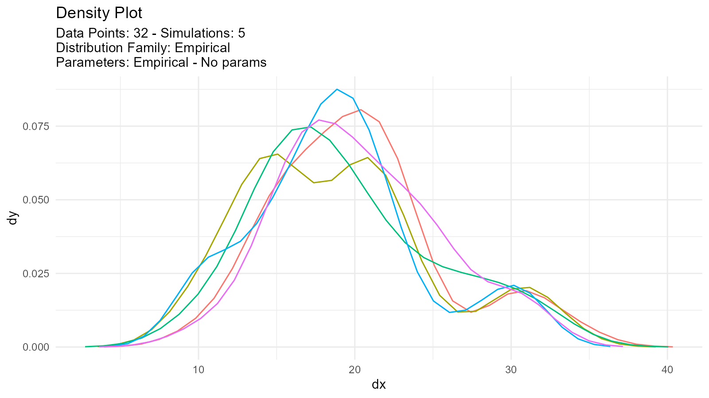
Comparing Empirical with Theoretical
# Observed data
data <- mtcars$mpg
# Empirical distribution
empirical <- tidy_empirical(.x = data, .num_sims = 1)
# Fitted theoretical distribution
theoretical <- tidy_normal(
.n = length(data),
.mean = mean(data),
.sd = sd(data)
)
# Combine for comparison
combined <- tidy_combine_distributions(empirical, theoretical)
# Plot
tidy_combined_autoplot(combined)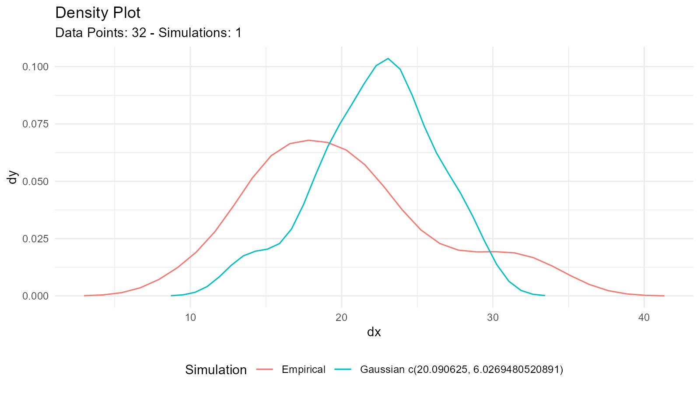
Empirical Bootstrap
Combine empirical with bootstrap:
# Bootstrap from empirical data
boot_empirical <- tidy_bootstrap(
.x = observed_data,
.num_sims = 100
)
# Visualize bootstrap distribution
bootstrap_stat_plot(boot_empirical, .value = y, .stat = "cmean")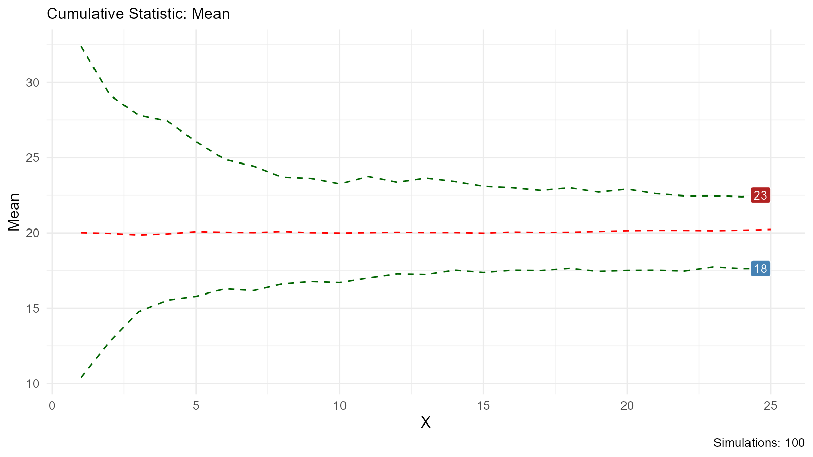
Multi-Distribution Comparison
Compare Same Distribution with Different Parameters
# Compare normal distributions with different parameters
comparison <- tidy_multi_single_dist(
.tidy_dist = "tidy_normal",
.param_list = list(
.n = 100,
.mean = c(-2, 0, 2),
.sd = 1,
.num_sims = 5,
.return_tibble = TRUE
)
)
# Visualize
tidy_multi_dist_autoplot(comparison)
Compare Different Distributions
# Generate different distributions
normal <- tidy_normal(.n = 100, .mean = 0, .sd = 1)
cauchy <- tidy_cauchy(.n = 100, .location = 0, .scale = 1)
logistic <- tidy_logistic(.n = 100, .location = 0, .scale = 1)
# Combine
combined <- tidy_combine_distributions(normal, cauchy, logistic)
# Visualize
tidy_combined_autoplot(combined)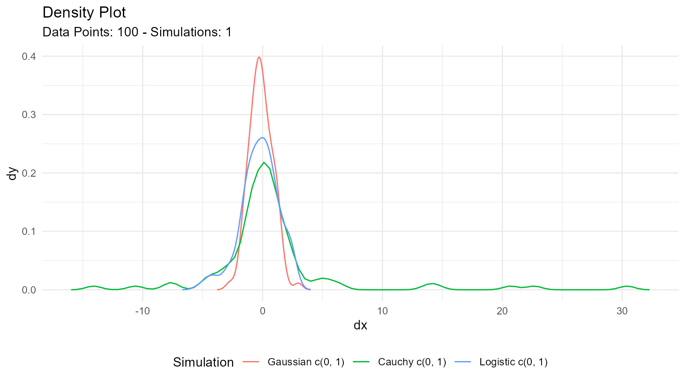
Random Walk Generation
Basic Random Walk
# Generate random walk
rw <- tidy_normal(.sd = .1, .num_sims = 25) |>
tidy_random_walk(.value_type = "cum_sum")
head(rw)
#> # A tibble: 6 × 8
#> sim_number x y dx dy p q random_walk_value
#> <fct> <int> <dbl> <dbl> <dbl> <dbl> <dbl> <dbl>
#> 1 1 1 -0.0637 -0.400 0.00242 0.262 -0.0637 -0.0637
#> 2 1 2 0.00175 -0.384 0.00762 0.507 0.00175 -0.0619
#> 3 1 3 0.130 -0.369 0.0204 0.903 0.130 0.0680
#> 4 1 4 -0.0794 -0.354 0.0463 0.214 -0.0794 -0.0113
#> 5 1 5 -0.0123 -0.339 0.0897 0.451 -0.0123 -0.0236
#> 6 1 6 0.00993 -0.324 0.149 0.540 0.00993 -0.0136Random Walk Visualization
ggplot(rw, aes(x = x, y = random_walk_value, color = sim_number, group = sim_number)) +
geom_line() +
labs(
title = "Random Walk Simulations",
x = "Step",
y = "Cumulative Value",
color = "Simulation"
) +
theme_minimal() +
theme(legend.position = "none")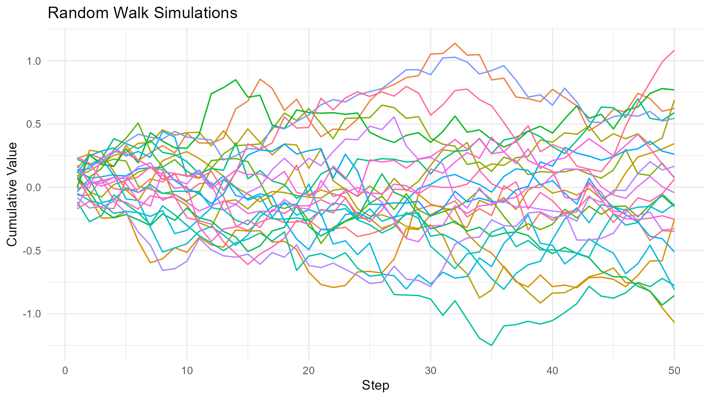
Random Walk Analysis
# Analyze random walk endpoints
rw_analysis <- rw |>
group_by(sim_number) |>
summarise(
final_position = last(random_walk_value),
max_position = max(random_walk_value),
min_position = min(random_walk_value),
range = max(random_walk_value) - min(random_walk_value)
)
rw_analysis
#> # A tibble: 25 × 5
#> sim_number final_position max_position min_position range
#> <fct> <dbl> <dbl> <dbl> <dbl>
#> 1 1 -0.349 0.106 -0.421 0.527
#> 2 2 0.623 1.14 0.164 0.974
#> 3 3 -0.254 0.0686 -0.794 0.863
#> 4 4 0.345 0.345 -0.400 0.745
#> 5 5 -1.07 0.461 -1.07 1.53
#> 6 6 0.689 0.689 -0.319 1.01
#> 7 7 0.0732 0.649 -0.110 0.758
#> 8 8 -0.154 0.508 -0.445 0.953
#> 9 9 0.769 0.850 0.00377 0.846
#> 10 10 -0.856 0.106 -0.931 1.04
#> # ℹ 15 more rowsDistribution Combinations
Combining Multiple Distributions
# Create several distributions
dist_norm <- tidy_normal(.n = 100, .mean = 0, .sd = 1)
dist_gamma <- tidy_gamma(.n = 100, .shape = 2, .scale = 1)
dist_beta <- tidy_beta(.n = 100, .shape1 = 2, .shape2 = 5)
# Combine into one tibble
combined_dists <- tidy_combine_distributions(dist_norm, dist_gamma, dist_beta)
# Visualize all together
tidy_combined_autoplot(combined_dists)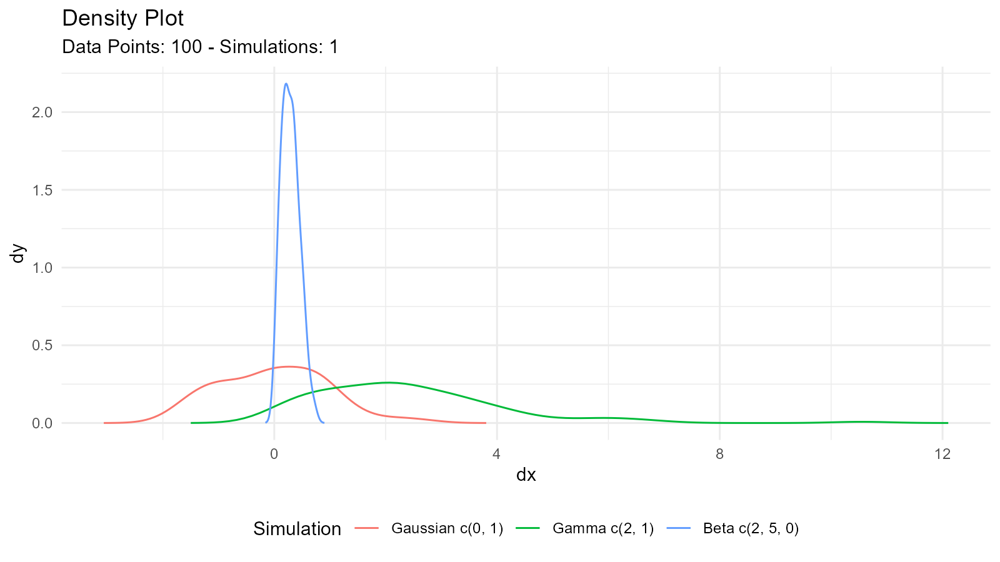
Multi-Single Distribution Table
Create comparison table for same distribution with varying parameters:
# Generate multiple parameter sets
multi_beta <- tidy_multi_single_dist(
.tidy_dist = "tidy_beta",
.param_list = list(
.n = 100,
.shape1 = c(1, 2, 5, 5),
.shape2 = c(1, 5, 2, 5),
.ncp = 0,
.num_sims = 1,
.return_tibble = TRUE
)
)
# Visualize
tidy_multi_dist_autoplot(multi_beta)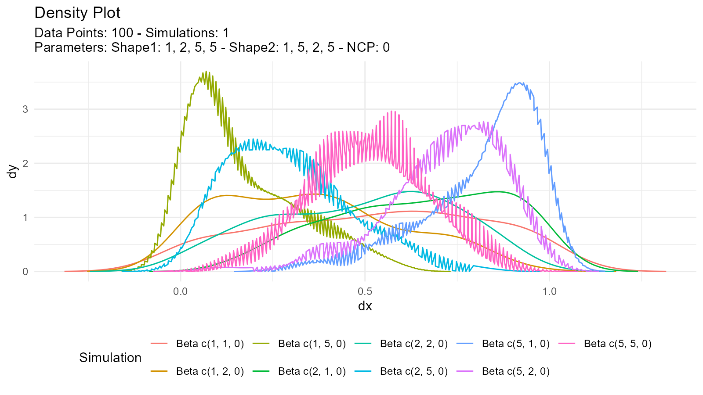
Quantile Normalization
What is Quantile Normalization?
Transform data to have a specific distribution while preserving ranks:
# Your data
data_mat <- matrix(c(5, 2, 8, 3, 9, 1, 7, 4, 6), 3, 3)
# Normalize to range [0, 1]
normalized <- quantile_normalize(data.frame(data_mat))
# Compare original and normalized
cat("Original Data: \n")
#> Original Data:
print(data_mat)
#> [,1] [,2] [,3]
#> [1,] 5 3 7
#> [2,] 2 9 4
#> [3,] 8 1 6
cat("\n")
cat("Normalized Data: \n")
#> Normalized Data:
print(normalized)
#> X1 X2 X3
#> [1,] 4.666667 4.666667 8.000000
#> [2,] 2.333333 8.000000 2.333333
#> [3,] 8.000000 2.333333 4.666667
cat("\n")Advanced Plotting
Four-Panel Plots
View multiple plot types simultaneously:
data <- tidy_normal(.n = 100, .num_sims = 3)
# Create all plot types
p1 <- tidy_autoplot(data, .plot_type = "density")
p2 <- tidy_autoplot(data, .plot_type = "probability")
p3 <- tidy_autoplot(data, .plot_type = "quantile")
p4 <- tidy_autoplot(data, .plot_type = "qq")
# Combine in 2x2 grid
(p1 | p2) / (p3 | p4) +
plot_annotation(
title = "Four-Panel Distribution Analysis"
)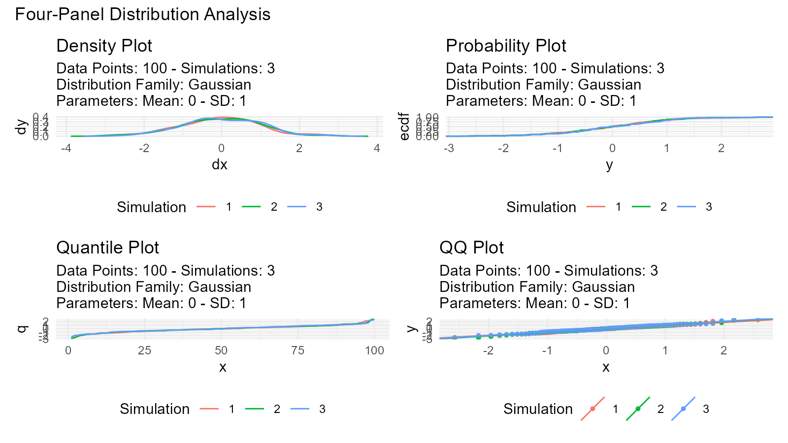
Triangular Distribution Plots
# Triangular distribution
tri <- tidy_triangular(
.n = 100,
.min = 0,
.max = 10,
.mode = 7
)
# Visualize
tidy_autoplot(tri, .plot_type = "density")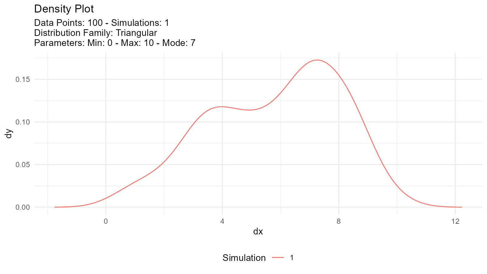
Real-World Examples
Example 1: Modeling Bimodal Data
# Simulate bimodal data (two age groups)
young <- tidy_normal(.n = 200, .mean = 25, .sd = 3)
old <- tidy_normal(.n = 150, .mean = 65, .sd = 5)
# Create mixture model
age_distribution <- tidy_mixture_density(
young, old,
.combination_type = "stack"
)
age_distribution$plots
#> $line_plot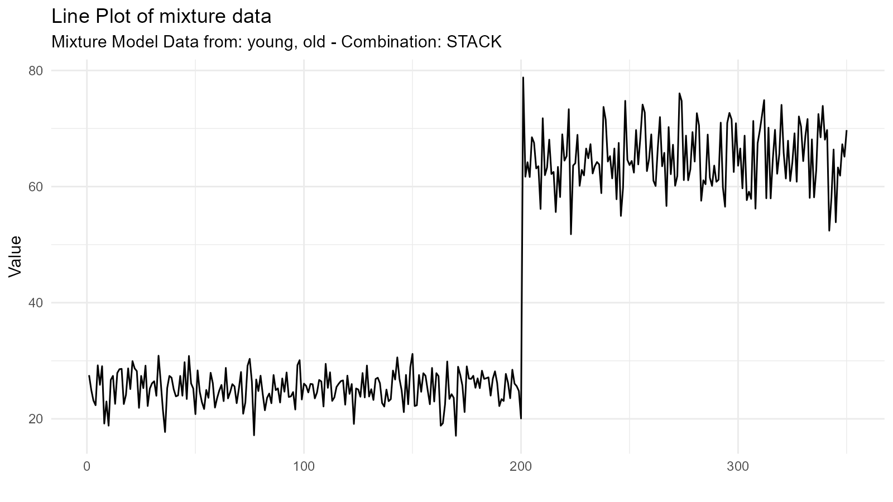
#>
#> $dens_plot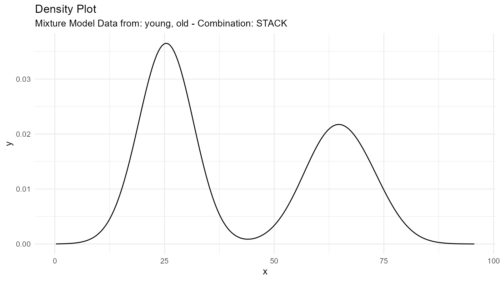
Example 2: Quality Control
# Good products (tight distribution)
# Defective products (wider distribution)
good <- tidy_normal(.n = 95, .mean = 100, .sd = 2)
defective <- tidy_normal(.n = 5, .mean = 100, .sd = 10)
# Mixture model
qc_distribution <- tidy_mixture_density(
good, defective,
.combination_type = "stack"
)
qc_distribution$plots
#> $line_plot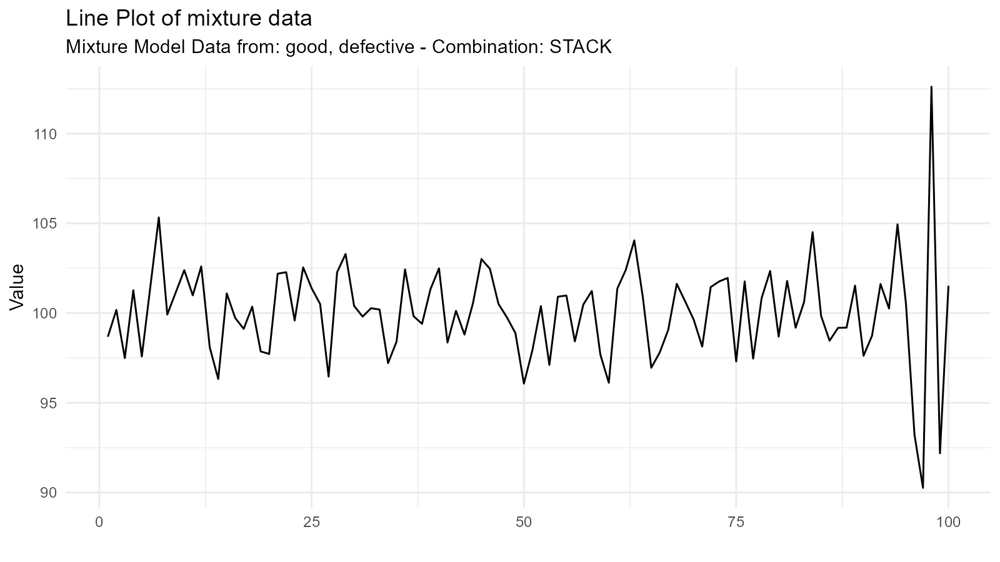
#>
#> $dens_plot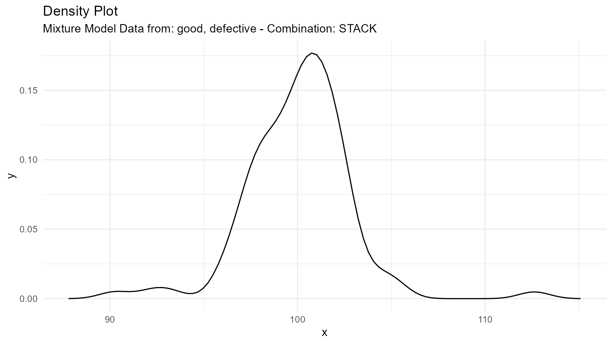
Tips and Tricks
Tip 1: Validate Mixture Models
# Create mixture
mixture <- tidy_mixture_density(
rnorm(50, -2, 1), rnorm(50, 2, 1),
.combination_type = "stack"
)
# Extract key statistics from the mixture density data
mixture_stats <- mixture$data$dens_tbl |>
dplyr::summarise(
mean_x = mean(x, na.rm = TRUE),
sd_x = sd(x, na.rm = TRUE),
median_x = median(x, na.rm = TRUE)
)
mixture_stats
#> # A tibble: 1 × 3
#> mean_x sd_x median_x
#> <dbl> <dbl> <dbl>
#> 1 0.134 4.19 0.134Tip 2: Debug by Plotting Components Separately
If a mixture doesn’t look right, plot the components individually:
# Debug by plotting components separately
dist1 <- tidy_normal(.mean = -2)
dist2 <- tidy_normal(.mean = 2)
p1 <- tidy_autoplot(dist1, .plot_type = "density") +
ggtitle("Component 1")
p2 <- tidy_autoplot(dist2, .plot_type = "density") +
ggtitle("Component 2")
p1 | p2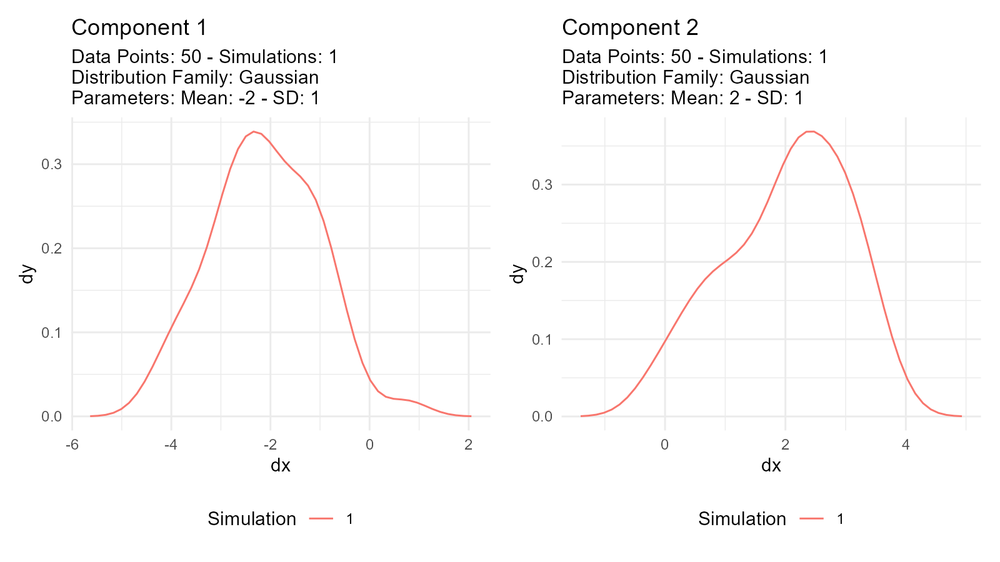
Troubleshooting
Issue: Mixture Doesn’t Look Right
Check:
- Are component distributions on appropriate scales?
- Are mixture weights (via
.n) appropriate? - Is the mixture type correct?
Issue: Empirical Distribution Too Noisy
Solution: Use multiple simulations for smoothing:
# Increase sample size via resampling
empirical_smooth <- tidy_empirical(.x = mtcars$mpg, .num_sims = 10)
tidy_autoplot(empirical_smooth, .plot_type = "density")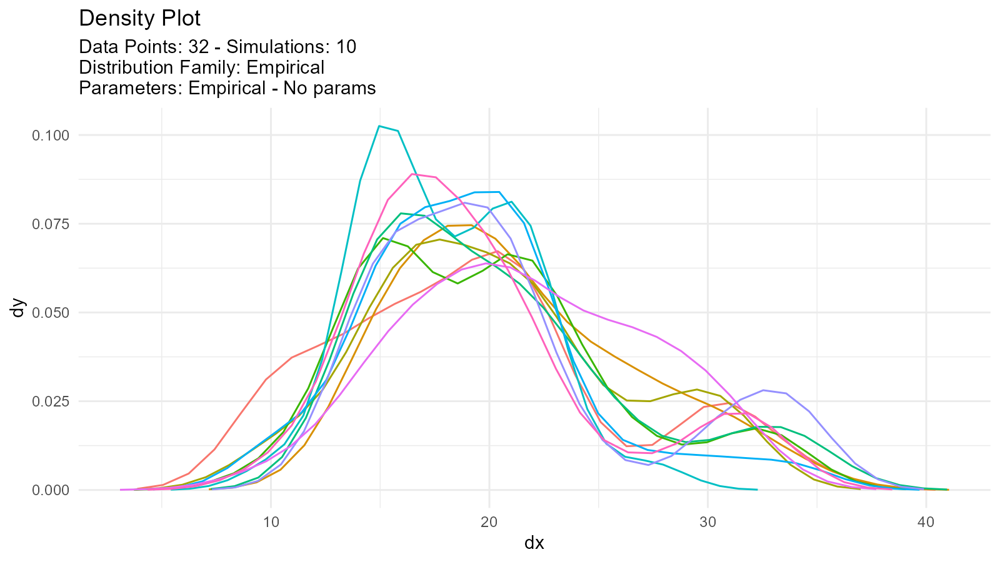